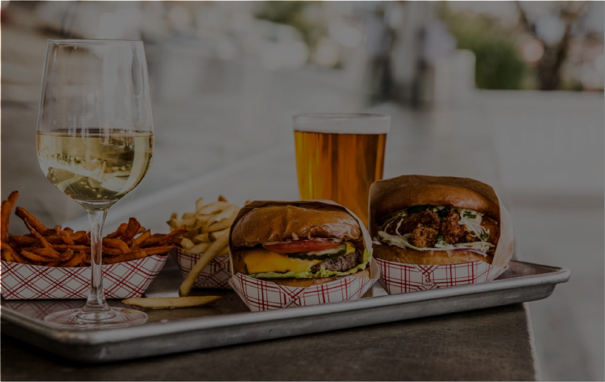

GOTT'S ROADSIDE
HUMPHREY SLOCOMBE
x
- Location: Ferry Building
- Hours: 10AM-10PM
- Locally sourced burgers, fish tacos, beer
- Fan Favorite: Crispy Teriyaki Chicken Sandwich
x
- Location: Ferry Building
- Hours: 11AM-9PM
- Artisan ice cream, including unusual flavors like cheese
- Fan Favorite: Jasmine Lychee
FERRY BUILDING
SF-OAKLAND BAY BRIDGE
x
- Location: 1 Sausalito
- Hours: 10AM-7PM
- Historial building-turned marketplace devoted to the artisan food community.
x
- Location: Seen from Pier 1
- Built in 1936, connects San Francisco and Oakland, has one of the longest spans in the US.
EXPLORATORIUM
AQUARIUM OF THE BAY
x
- Location: Pier 15
- Hours: 10AM-5PM
- Hundreds of interactive, educational exhibits and activities illustrating scientific principles.
- Admission: FREE-$29.95
x
- Location: Pier 39
- Hours: 10AM-8PM
- Public aquarium focused on local aquatic animals from the SF Bay and neighboring waters.
- Admission: $14.95-$24.95

 home
home